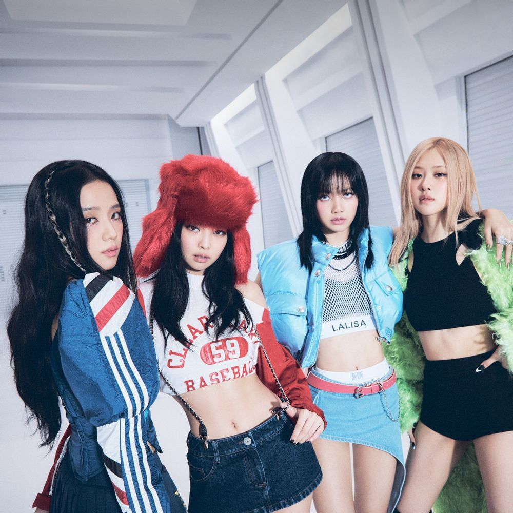

블랙핑크 | BLACKPINK
2022. 12. 11 작성
전 세계에서 가장 영향력 있는 걸그룹이자 방탄소년단과 함께 KPOP 양대산맥으로 불리고 있으며, '세계에서 가장 큰 팝 밴드', '세계 1등 걸그룹' 은 그들을 가르키는 수식어로 미국 빌보드와 포브스, 롤링스톤, 타임지, 블룸버그, 일본의 오리콘 등 세계 유수의 언론매체들의 찬사를 받고 있는 세계 최정상 걸그룹이다.
2018년부터 국내는 물론 해외에서 좋은 성과를 거둬 인지도를 높혔고, 2019년 K-POP 그룹 최초 코첼라 서브 헤드라이너로 참여해 당시 헤드 라이너 였던 아리아나 그란데를 크게 뛰어넘는 수치를 보이며 참여 아티스트중 가장 압도적인 SNS 언급량 및 화제성으로 이때부터 '월드스타' 반열에 오르기 시작했다. 또 2023년 7월 2일에 열리는 브리티시 서머 타임 페스티벌의 K-POP 아티스트 최초 헤드라이너 출연이 확정 되었다.
2018년 미니 1집 《SQUARE UP》의 타이틀곡인 뚜두뚜두는 한국 갤럽조사 올해의 노래 1위를 하였다.
2020년 발표한 싱글과 앨범이 각각 국내 걸그룹 사상 최초, 최고의 성적인 Billboard Hot 100 13위, Billboard 200 2위를 기록했으며, 빌보드 역사 이래 전세계 걸그룹 최초 빌보드 아티스트 100 차트 1위에 올랐다.
블랙핑크의 첫 정규 앨범인《THE ALBUM》은 한국 걸그룹 최초 밀리언 셀러를 달성하였으며, 당시 역대 한국 걸그룹 초동 및 총판 1위와 역대 한국 여자 가수 최다 판매고 140만장의 세일즈를 기록했다.
두번째 정규 앨범인 《BORN PINK》는 초동 154만장으로 한국 걸그룹 최초 더블 밀리언 셀러를 달성하며 이전 초동 기록을 경신하였으며, 초동 첫날에 밀리언셀러인 100만장이 넘는 세일즈를 기록했다. 역대 대한민국 가수 음반 초동 기록 TOP 10에 들어가는 기록으로, 선주문 200만장을 넘어 써클차트에서 총판 약 214만장이라는 세일즈를 기록했다.
UK 차트 앨범 부문에서 1위와 빌보드 200차트에서 1위를 했다. 영/미 차트 동시 석권 이 두 차트에서 동시에 1위를 한 걸그룹으로는 Destiny's Child였다. 이 이후에 21년만에 블랙핑크가 달성하며 한국 및 아시아 걸그룹 최초의 기록을 세우는 동시에 전세계 걸그룹으론 2번째로 기록을 세우게 되었다. 이에 힘입어 빌보드 아티스트 100차트 1위도 올랐다. 또 타이틀 곡인 'Shut Down'은 스포티파이 글로벌 주간 1위를 하며, 한국 가수 최초 기록을 세웠다.
2021년 영국 더 타임스는 세계를 정복한 대표 한류중 하나로 블랙핑크를 꼽았다.